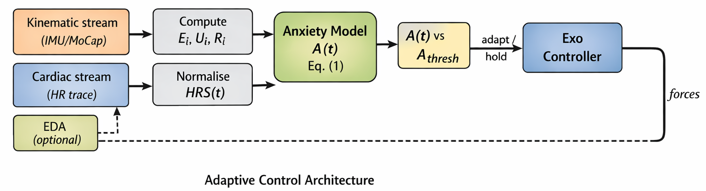

Current Research · GIST · Advisor: Prof. Pilwon Hur
Trust & State Anxiety in Physically Coupled Human–Robot Interaction
Download the ICROS 2026 paper (PDF)Akhyani & Hur, Proc. 41st ICROS Annual Conference (ICROS 2026), Daegu, Korea, pp. 199–200, Jul. 2026. The proceedings are not yet indexed online, so this is the only accessible copy.
The problem
Trust in a wearable robot fails differently from trust in detached automation — and it fails before any trust measure can register the change.
An exoskeleton applies force directly to the wearer’s body, inside the peripersonal space where threat sensitivity is highest; timing errors as small as 2.8% of a stride are perceptually detectable. Existing HRI trust models operate at the outcome layer: they quantify the resulting trust state from behaviour or self-report, without representing the physiological cascade that produces it.
This loop closes before any trust outcome is observable. Modelling anxiety — the mechanism — rather than trust — the outcome — is therefore the prerequisite for intervening in real time.
A closed-form state-anxiety estimate
State anxiety at time t is a single scalar, computable online from signals a wearable HRI system already collects:
- Abase — the individual’s baseline trait score (STAI). A perfectly anticipated event contributes near zero.
- wi · Ui — a negativity-bias weight (2.5 for error events, 1.0 for neutral ones) times the event’s unexpectedness Ui = |EiRi − μi| / (σi · ηi1/4), built from kinematic error, an impact grade, and a running error distribution.
- HRS recovery term — a heart-rate-response function with exponential sympathetic decay and sigmoidal saturation; normalised, it equals 1 right after a stressor and approaches 0 as the wearer recovers.
Anxiety responds to unpredictability, not magnitude — a large but fully expected perturbation barely moves A(t).

Closed-loop architecture
Kinematic data (IMU / MoCap) yield the error, unexpectedness and impact terms; the cardiac trace yields the normalised HRS recovery. The scalar A(t) is compared against a per-individual threshold Athresh:
- Below threshold — the controller holds; therapeutic load is unchanged.
- At or above — increase actuation predictability (slower ramps, pre-cues, reduced timing jitter), targeting the prediction error without withdrawing assistance.
- Sustained ≥ Ts/2 ≈ 3 min — escalate to assistance reduction.

Parameter grounding
Individual parameters need per-subject fitting, but their ranges are verified against published data: M ≈ 0.4 (max fractional heart-rate elevation under acute psychosocial stress, from WESAD TSST sessions) and Ts ≈ 6 min (cardiac recovery). A(t) updates at the cardiac sampling rate with roughly 3–5 s latency from a kinematic error — well below the minute-scale dynamics of trust failure.
Validity threat & next step
Because therapeutic exertion is the normal operating condition for a rehabilitation exoskeleton, exercise-induced cardiac arousal is the central threat to the estimate. Per-subject HRS normalisation and an optional EDA channel mitigate it; exertion-matched controls are needed for formal validation. The immediate next step is per-subject fitting against VAS-rated anxiety, targeting a moderate-to-strong correlation between predicted and reported values.
This model is the perception layer for a broader Trust-POMDP for human–exoskeleton interaction (GIST, 2024–), where the anxiety estimate becomes an observation the controller uses to reason about the wearer’s latent trust state.
Cite
M. Akhyani and P. Hur, “Real-Time State Anxiety Estimation for Adaptive Wearable Exoskeleton Control,” in Proc. 41st ICROS Annual Conference (ICROS 2026), Daegu, Korea, pp. 199–200, Jul. 2026.